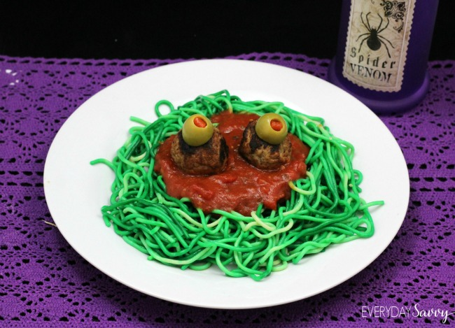

Monster Spaghetti

Description about Monster Spaghetti
Ingredients
- 1 package of spaghetti noodles
- Green gel food coloring
- 1-28 oz can stewed tomatoes
- 1 can of tomato paste
- 4 TBSP chopped fresh parsley
- 1/4 tsp of a jar of pre-minced garlic
- 1 tsp dried oregano
- Salt & pepper to taste
- 6 TBSP Olive oil
- 1/3 C diced onion
- 1 bag of frozen meatballs. Prepare as per package directions.
- 1 jar of Spanish olives with pimientos
Spaghetti Directions
- Bring 4 quarts of water to a boil water in a large pot.
- Add 1 TBSP of salt to the pot.
- Add pasta. Stir it then test the pasta by tasting it. Drain the pasta next.
- Pour pasta into a collander to drain. Rinse in cool water.
- In a large zip lock bag add 2 TBSP of water and about 10-20 drops of food coloring. Shake to blend the color int the sealed bag.
- Pour the cooled spaghetti into the bag with the food coloring. Seal the bag. Gently with your hands combine the spaghetti and food coloring by shaking the bag or kneading the bag.
- Allow the filled bag to sit for 1 minute.
- Dump the colored spaghetti back into the colander rinsing with cold water to remove any excess coloring.
- Transfer spaghetti to a bowl.
Sauce Directions
- Add all ingredients ( except olive oil and onion) to a food processor . Puree.
- Pour some olive oil in a skillet and add minced onion.
- Saute onions until soft.
- Add pureed sauce and cook for 30 minutes.
Monster Spaghetti Directions
- Put green spaghetti on a plate.
- Spoon some marinara in the center of the green spaghetti.
- Take 2 meatballs and add two olives for the eyes.
- Place the meatballs in the center of the marinara.